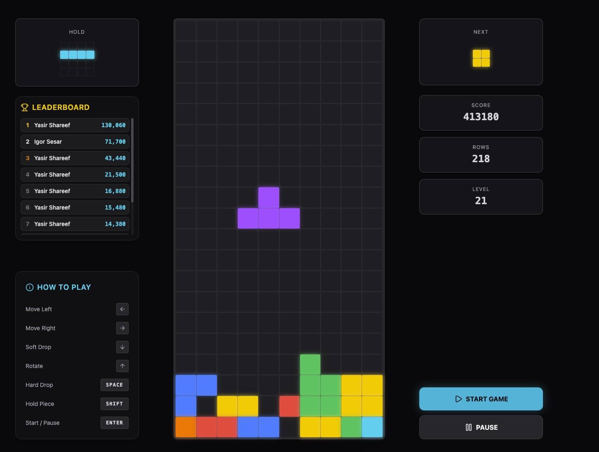

Lesson · Year 3 + 4 · 30 min
Lesson · Year 3 + 4 · 30 min
Build Tetris
With A.I.
5 minutes. One prompt. A real game.
You write the instructions. The A.I. writes the code. You play your game.
HOOK
How long did this take Mr Igor to build?

Take a guess. Wait for it.
01 WALT
What are we learning today?
We are learning to use Google AI Studio to create a Tetris game from one prompt.
We are learning to identify what makes a prompt good or bad by comparing two examples.
We are learning to describe how to copy a prompt from Classroom and run it in Gemini.
02 Success Criteria
How will you know you've nailed it?
I can log in to Google Classroom and find today's assignment.
I can copy the prompt, paste it into Gemini AI Studio, and run it to make the Tetris game.
I can identify which prompt was the good one and explain why it gave a better game.
I DO Good prompt vs Bad prompt
Detail matters.
of a cute cat
I Do
The 4 Steps
Find the "Build Tetris with AI" assignment.
Highlight, then Ctrl+C.
Go to aistudio.google.com
Paste the prompt. Click Build.
TOOLS → CANVAS, then switch FAST → PRO.
We Do
Now you do it. Together.
Mr Igor will show you now. Open Google Classroom, copy the prompt, then open Gemini AI Studio.
Click TOOLS and pick CANVAS. Then switch FAST to PRO.
Paste the prompt. Click Build.
While the AI builds, do a Turn and Talk: "What do you think is happening right now?"
You Do
Wait. Play. Change one thing.
Wait until you see the Play button or the game appears. If something looks broken, raise your hand.
Make sure it really works. Do the controls move? Do blocks fall? Do rows clear? If not, raise your hand.
Turn and Talk: pick ONE thing in the prompt you would change to make YOUR game different.
03 Exit Ticket
Before you log off.
the bad one or the good one?
Why?
You did it.
You used A.I. to build a real Tetris game in 30 minutes.
You'll give the A.I. new instructions to change YOUR game.